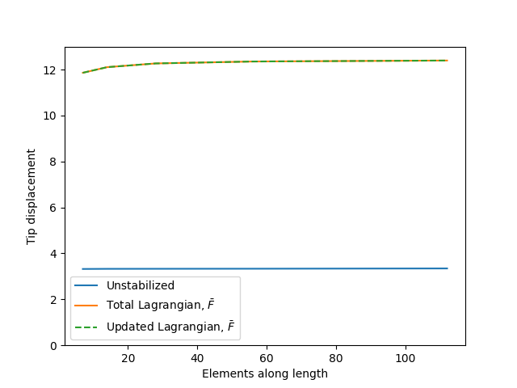
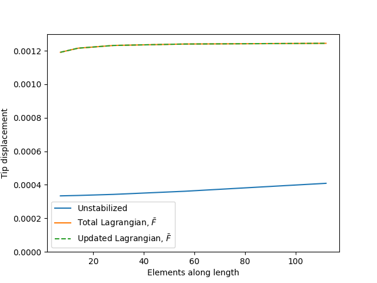

Stabilization for the Lagrangian Kernels
The Need for Stabilization
Standard 2D and 3D finite elements using a linear interpolation of the displacement field are not stable for incompressible and nearly incompressible deformation Hughes (1987). These standard elements include the triangle, tetrahedral, quadrilateral, and hexahedral elements commonly used in solving problems in the Solid Mechanics module. Incompressible deformation is material deformation that does not change the local volume of the structure, for example linear elastic deformation as the Poisson's ratio approaches . Other common examples include problems representing elastic-plastic materials problems with widespread plasticity, as (traditional) plasticity occurs via shear, as well as many types of hyperelastic models representing soft polymers.
Under these conditions standard linear elements exhibit volumetric locking where the apparent, numerical stiffness of the element is much greater than the actual analytic stiffness of the structure. This locking leads to inaccurate results which do not improve with mesh refinement.
and Stabilization
There are two common methods used to stabilize linear elements and avoid volumetric locking: the Souza Neto et al. (1996) and Hughes (1980). Of these theories is older and was originally developed for small deformation problems while was developed later and originally intended for large deformation problems. However, the method can be used for small deformation problems as well, can be extended to large deformation problems, and the method can be viewed as a subset of the theory. The following explains the two approaches in the context of small deformations.
alters the definition of the strain being fed into the constitutive models to produce the stress, subsequently used by the kernel to calculate the stress equilibrium residual. The theory modifies the strains so that the dilatational part of the strain at each quadrature point is set equal to the volume-average dilatation strain. Mathematically, where is the strain calculated from the displacement gradient. This method then stabilizes the problem by replacing the linear-varying dilatational strain with a constant dilatational strain over each element. Notionally, in MOOSE the only alters the material model, though in fact it also changes the definition of the Jacobian (but not the residual) in the Kernel.
makes this modification to the strain but then also modifies the definition of the residual, replacing the original small deformation stress equilibrium weak form with a modified version where the method modifies the trial function gradient in exactly the same way as the strains:
The modification results in a symmetric Jacobian (assuming that the original problem had a symmetric Jacobian). This is a significant advantage for codes taking advantage of the symmetry of the assembled Jacobian matrix. However, MOOSE does not take advantage of this symmetry and so the Lagrangian kernel system implements the method, as it is somewhat easier to derive and implement in the large deformation context.
Implementation in the Lagrangian Kernel System
The stabilize_strain flag controls stabilization in the Lagrangian kernel system. This flag must be set for both the stress equilibrium kernels TotalLagrangianStressDivergence or UpdatedLagrangianStressDivergence and the strain calculator ComputeLagrangianStrain. The values must be consistent.
The form of the stabilization depends on if the problem is using large or small displacement kinematic theory, controlled in turn by the value of the large_kinematics flag passed to both the kernel and strain calculator.
For small displacements the strain calculator modifies the strains in the manner described in the previous subsection:
For large displacements the strain calculator modifies the deformation gradient instead:
From here the stress update proceeds the same as with stabilization off, except the stress is now based on the modified strain value. The approach does not alter the weak form residual in the kernel. However, this change in the definition of the strain does affect the Jacobian calculated in the total Lagrangian and updated Lagrangian kernels, as detailed in their documentation.
The stabilization triggered by the stabilize_strain flag should only used for linear quad and hex elements. is unnecessary for higher order elements and ineffective for linear triangle and tetrahedral elements.
Cook's Membrane: A Demonstration the Stabilization is Effective
Figure 1 shows Cook's Membrane, a classical problem for demonstrating volumetric locking and assessing stabilization techniques for overcoming it. When this problem is solved with a nearly a incompressible material it induces locking in unstabilized, linear, Q4 quad elements. Figure 2 and Figure 3 show the problem solved twice, first with small deformation kinematics and a linear elastic material defined by and and then again with large deformation kinematics and a Neohookean material with and . Each plot shows the displacement at the tip of the beam as a function of mesh refinement

Figure 1: Cook's membrane: a reference problem for testing locking and stabilization strategies
These plots demonstrate
The problem with locking in both large and small deformations for unstabilized, linear elements. The beam tip displacement is much smaller in the unstabilized problems compared to the true solution and the stabilized solutions (i.e. these elements are very stiff). Moreover, mesh refinement is not effective at resolving the issue.
The stabilization implemented in the Lagrangian kernel system effectively eliminates volumetric locking for both the updated and total Lagrangian formulations and for both small and large deformations. The stabilized solutions for each kernel type are identical, they demonstrate the proper, non-locking stiffness, and mesh refinement converges the problem to a stable, analytic solution.

Figure 2: Demonstration of stabilization on a small deformation problem.

Figure 3: Demonstration of stabilization on a large deformation problem.
References
- EA de Souza Neto, D Perić, M Dutko, and DRJ Owen.
Design of simple low order finite elements for large strain analysis of nearly incompressible solids.
International Journal of Solids and Structures, 33(20-22):3277–3296, 1996.[BibTeX]
- T. J. R Hughes.
The Finite Element Method, Linear Static and Dynamic Finite Element Analysis.
New Jersey:Prentice-Hall, 1987.[BibTeX]
- Thomas JR Hughes.
Generalization of selective integration procedures to anisotropic and nonlinear media.
International Journal for Numerical Methods in Engineering, 15(9):1413–1418, 1980.[BibTeX]